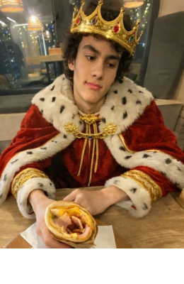

скиньте мне денег,
пожалуйста
скиньте мне денег,
пожалуйста
Дизайнер продумал внешний вид сайта, сделав его стильным и современным. Он подобрал цвета, шрифты и изображения, которые хорошо сочетаются между собой. Дизайнер учёл удобство пользователей и сделал интерфейс понятным. В процессе работы он вносил правки, чтобы улучшить восприятие сайта. Благодаря дизайнеру сайт получился привлекательным и запоминающимся.
Человек, который спроектировал сайт, заранее составил план всех страниц и разделов. При разработке сайта он учитывал потребности целевой аудитории. Этот человек протестировал сайт на разных устройствах и браузерах. Благодаря его работе сайт получился функциональным и простым в использовании.При создании сайта он использовал современные технологии и инструменты.
Для вайба и картинки сделал.